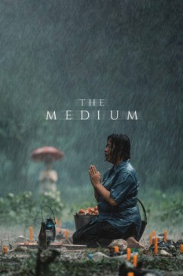

AKA:ร่างทรง (Título original)
País:Tailandia, 131 minutos.
Idiomas:Tailandés
GénerosTerror, Suspenso
Director/es:Banjong Pisanthanakun
Guionistas:Banjong Pisanthanakun
Códec de vídeo:Unknown
Número: 137


Certificación:
Argumento:
Una historia espantosa sobre la herencia de un chamán en la región de Isan en Tailandia. Pero la diosa que parece haber tomado posesión de un miembro de la familia resulta no ser tan benevolente como parece.
Reparto
Medio: Archivo de video,
Localización: D:\Multimedia\Películas\La Médium (2021)\La Médium (2021).mkv
Prestado: No
Rel. aspecto: Unknown